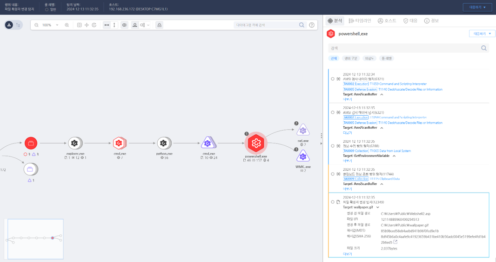

T1036.008.02 Masquerade File Type
D3FEND
MITRE ATT&CK 액션을 기준으로 대응 방안을 작성
Detection
- CurrentProcess : "powershell.exe" AND
- Action : "File-Rename" AND
- TargetFileExetentionBefore != TargetFileExetentionAfter
Detection(EDR)

Response
- 이벤트 분석
- 의심스러운 파일이 실제 확장자와 일치하지 않는 실행 파일인지 확인(예: .txt로 보이지만 실제로는 .exe 파일).
- 파일 메타데이터와 해시값을 비교하여 위장된 파일 유형 탐지.
- 실행된 프로세스의 부모-자식 관계와 비정상적인 파일 경로를 조사.
- 격리 및 조사
- 의심 파일을 격리하고, 파일 콘텐츠를 정밀 분석(예: 헤더 정보와 실행 파일 코드 검사).
- 위장된 파일 실행 이후 생성된 네트워크 연결 및 시스템 변경 사항 추적.
- 동일 네트워크에서 유사한 파일 유형 위장이 사용되었는지 로그 분석.
- 정보 차단
- 파일 확장자와 MIME 유형이 불일치하는 파일의 실행을 차단하는 정책 적용.
- 이메일 첨부 파일에서 위장된 확장자를 가진 파일 필터링 활성화.
Mitigations
파일 유형 검증 강화
- 파일을 실행하기 전에 파일 확장자와 헤더 정보의 일치 여부를 강제 검증하는 솔루션 배포.
- OS 설정에서 파일 확장자 숨기기 옵션을 비활성화하여 위장 탐지가 용이하도록 구성.
- 허용 리스트 제어
허용된 파일 유형과 경로를 명시적으로 지정하여, 비인가 파일 실행을 차단.
- 네트워크 파일 공유 위치에서 알 수 없는 파일 유형 업로드 제한.
사용자 교육 및 의식 강화
- 위장된 파일의 위험성을 교육하고, 출처가 불분명한 파일 실행을 피하도록 인식 제고.
- 다운로드 또는 이메일 첨부 파일 실행 시, 파일의 실제 속성을 확인하는 방법 교육.
보안 솔루션 활용
- Endpoint Protection 솔루션을 통해 위장된 실행 파일 탐지(예: 확장자가 .pdf로 위장된 실행 파일 차단).
- SIEM 및 EDR 솔루션에서 비정상 파일 실행 및 시스템 변경 탐지를 위한 새로운 룰 적용.
파일 관리 정책 개선
- 특정 확장자를 악성코드 위장에 자주 사용되는 확장자로 제한하고 실행을 차단.
- 네트워크 게이트웨이에서 MIME 유형 불일치 탐지 및 차단 기능 활성화.
Affected Techniques
Action 실행시 함께 영향을 받는 다른 Techniqes
| ATT&CK |
| T1204.002 |
| T1059.003 |
| D3FEND |
| D3-FIM File Integrity Monitoring |
| D3-FCA File Creation Analysis |